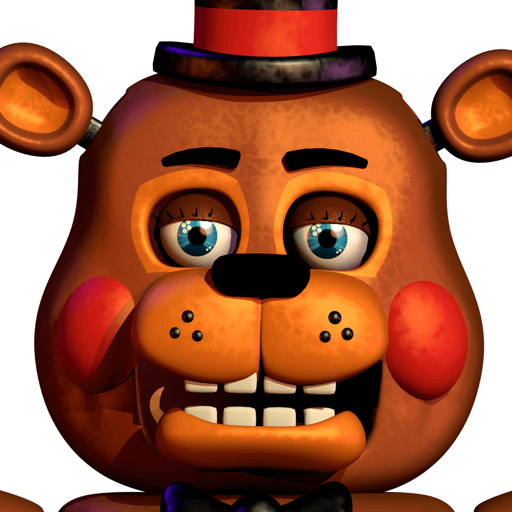
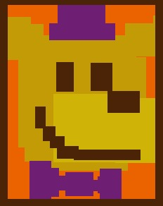
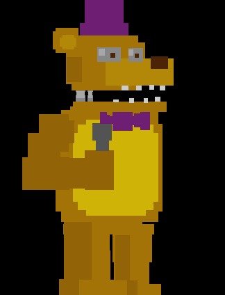
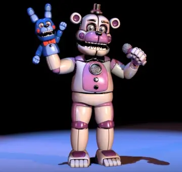

ANIMAL FAVORITO
Me encantan los osos. Hay algo en su fuerza y suavidad que me fascina. Me gusta cómo se mueven con lentitud y seguridad, como si fueran los dueños del bosque. Su pelaje suave y su mirada cálida me hacen sentir una conexión especial con ellos. Además, me impresiona su inteligencia y capacidad para adaptarse a diferentes entornos. Desde los osos polares que navegan por el Ártico hasta los osos negros que vagan por los bosques, cada especie tiene su propia personalidad y características únicas.
SAGA DE VIDEOJUEGOS Y PERSONAJE FAVORITO
Me encanta Five Nights at Freddy's (FNAF) porque es una experiencia única que combina el terror y la emoción de manera perfecta. Desde el primer momento en que jugué, supe que era algo especial. Me gusta cómo el juego juega con mi psicología, haciéndome sentir vulnerable y asustado en un entorno que parece inocente en un principio. Los personajes, como Freddy, Bonnie, Chica y Foxy, son terroríficos y su diseño es genial, sobre todo el personaje oculto "Fredbear".
 La mecánica de juego es simple pero adictiva, y el reto de sobrevivir cinco noches es un desafío que me motiva a seguir jugando. Además, la historia detrás del juego es fascinante y me hace querer saber más sobre el universo de FNAF.
Lo que realmente me atrae es la atmósfera de suspense y miedo que crea el juego. Los sonidos, las luces y la música todos contribuyen a crear una experiencia inmersiva que me hace sentir como si estuviera realmente en ese lugar.
En resumen, me gusta FNAF porque es un juego que me hace sentir emocionado, asustado y curioso al mismo tiempo. Es una experiencia única que no puedo encontrar en ningún otro juego."
 Fredbear es un personaje que me fascina por su complejidad y misterio. A primera vista, parece ser un oso adorable y amigable, pero según avanzas en la historia, descubres que hay mucho más detrás de su sonrisa.
Me gusta cómo Fredbear representa la dualidad entre la inocencia y la oscuridad. Por un lado, es un personaje diseñado para entretener a los niños, pero por otro, tiene una historia trágica y perturbadora que lo convierte en un símbolo de terror. Su diseño es genial, con su pelaje marrón claro y su sonrisa amplia, que me recuerda a un oso de peluche. Pero cuando se activa su modo "terrorífico", su apariencia cambia drásticamente, revelando una criatura más oscura y aterradora. Lo que realmente me atrae de Fredbear es su conexión con la historia de FNAF. Su relación con los otros personajes, especialmente con Springtrap y Purple Guy, es intrigante y me hace querer saber más sobre su pasado. Además, me gusta cómo Fredbear representa la idea de que incluso las cosas más inocentes pueden tener un lado oscuro. Es un recordatorio de que nada es como parece y que siempre hay más de lo que meets the eye.
WHITERED FREDDY Y SU IMPORTANCIA EN MI VIDA
Withered Freddy es más que un personaje de Five Nights at Freddy's para mí. Es un símbolo de la perseverancia y la resiliencia en medio del caos y el terror. Me fascina cómo Withered Freddy, a pesar de estar deteriorado y dañado, sigue siendo una fuerza formidable y aterradora en el juego. Su apariencia destrozada y su comportamiento errático me recuerdan que incluso en los momentos más oscuros, siempre hay una chispa de vida y energía que nos impulsa a seguir adelante. En el contexto de FNAF, Withered Freddy es un recordatorio de que la historia y el pasado pueden ser distorsionados y tergiversados, pero la esencia de lo que somos permanece. Su conexión con los eventos del juego y su papel en la narrativa me hace reflexionar sobre la importancia de entender y confrontar nuestros propios miedos y debilidades.

JUEGO FAVORITO (FNAF 1)
Five Nights at Freddy's (FNAF) se convirtió en un icono del terror para mí porque logró capturar la esencia del miedo de manera única y perturbadora. La forma en que el juego combina la atmósfera de suspense, los saltos de terror y la psicología del miedo es simplemente genial. Primero, el entorno del juego es perfecto para crear una sensación de claustrofobia y vulnerabilidad. Estás atrapado en una pequeña habitación, rodeado de criaturas que pueden matarte en cualquier momento. La sensación de impotencia es palpable.
Luego, están los personajes en sí. Freddy, Bonnie, Chica y Foxy son criaturas terroríficas que parecen haber salido de una pesadilla. Su diseño es genial, con su apariencia de osos de peluche que se convierte en algo oscuro y aterradora. Pero lo que realmente hace que FNAF sea un icono del terror es su capacidad para jugar con la psicología del jugador. El juego te hace sentir como si estuvieras perdiendo la cordura, con sonidos y movimientos que te hacen dudar de lo que está sucediendo.
Además, la historia detrás del juego es fascinante y perturbadora. La idea de que estos personajes fueron creados para entretener a los niños, pero se convirtieron en criaturas asesinas, es simplemente aterradora.
FUNTIME FREDDY
Es uno de esos personajes de Five Nights at Freddy's que realmente se destaca. Su diseño es tan llamativo y colorido, con su aspecto amigable que contrasta con el ambiente aterrador del juego. La forma en que tiene un micrófono y su compañero Bon Bon es genial; juntos tienen una dinámica divertida que añade un toque especial.
